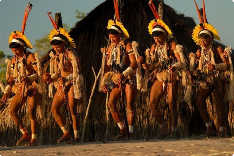

Yaokwa
Yaokwa marks the dry period, during which the Enauênes-Nauês interact with beings from the underground world called Yakairiti. As these creatures suffer from insatiable hunger, they need to be fed vegetable salt, fish, corn and cassava. In exchange for the food they receive, the spirits maintain social and cosmic order.
Yaokwa preparation begins in January, cassava harvest time and when Mata, a series of fishing traps, is built on the Joaquim Rios, Arimena, Rio Preto and Nhambiquara rivers. When fishing, the village is divided into nine ritual groups, according to clans. The fishermen, having removed the ornaments that identify them as human and divided into groups, then set off to camp on the banks of medium-sized rivers.